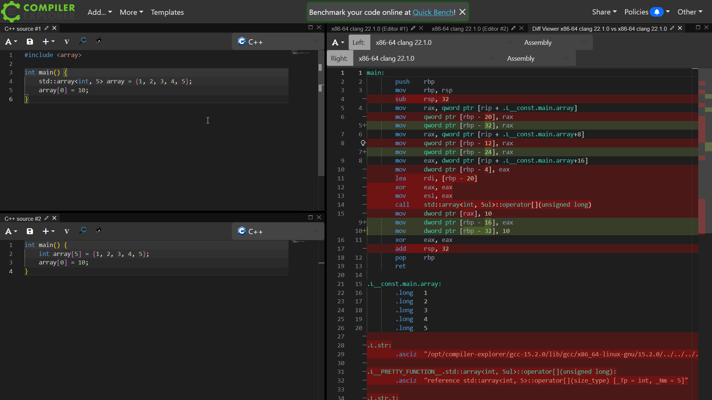
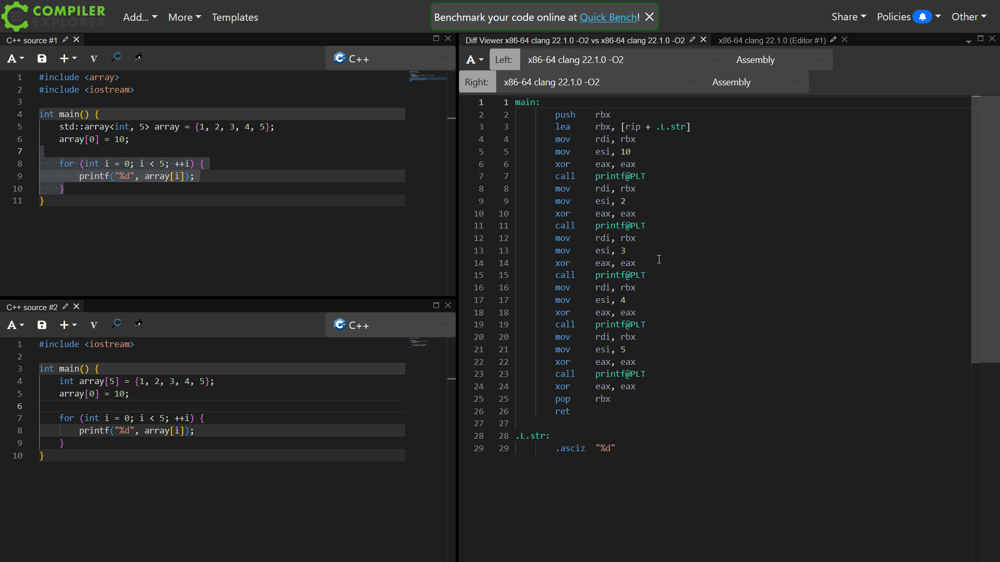
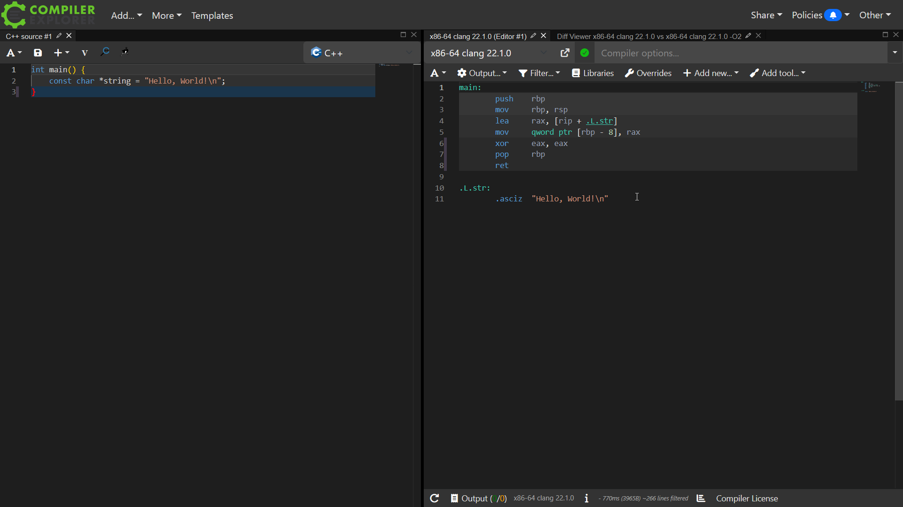

Basic CPP Optimizations
Daniel Vishnevsky
Introduction
It's recommended to have good CPP and computer knowledge before reading this article as we will dive deep into why and how these optimizations work. This article will be heavy on simple principles to get that free performance boost. We won't get into the more advanced optimization techniques like multi-threading and SIMD. We'll be using Quick Bench for benchmarks and Compiler Explorer to view assembly output since they're both freely available online and are simple to use. And I want to add that you can click on images to view them in fullscreen since they are hard to see.
TOC
C-Containers and STD Containers
Vectors
I'll show you common code. Can you spot the issue here?
std::vector<int > nums;for (int i = 0; i < 100000; ++i) { nums.push_back (i); }
The problem is that we knew the size of the array at runtime but chose to allocate the members dynamically. Every time we push back a number there's a chance that the whole vector reallocates, meaning it copies itself in a different spot on the heap. And that can get really expensive.
Even though the use of a better data structure would be better here, the main topic I want to go over in this section is std::vector::reserve() and std::vector::resize(). This is easily fixable by adding a single method call:
std::vector<int > nums; nums.reserve (100000);for (int i = 0; i < 100000; ++i) { nums.push_back (i); }
And you can use std::vector::resize() if you need member access instead:
std::vector<int > nums; nums.resize (100000);for (int i = 0; i < 100000; ++i) { nums[i] = i; }
The difference is huge on all vector sizes:
N=100000 N=100 N=10But why so? Well, if we call reserve right away then we allocate the whole vector at once and we don't need to reallocate it ever again unless we shoot over the capacity we have previously reserved. That can save a lot of unnecessary copies.
When I ran the benchmarks, I was originally surprised at std::vector::resize() being faster at larger N but slower at small N. But that's no mystery once we look under the hood. std::vector::reserve() only allocates the required memory, meaning the size of the vector is 0 and the capacity is N (where N is the size reserved). Whereas std::vector::resize() allocates the required memory and 0-sets it, meaning the size of the vector and the capacity is N. That makes it slower at smaller N as we write for each element twice, once to 0 and then once to our desired value.
| Method | Initial Size | Initial Capacity | Total Writes | Allocations |
|---|---|---|---|---|
| no method | 0 | 0 | N | log(N) |
| std::vector::reserve | 0 | N | N | 1 |
| std::vector::resize | N | N | 2N | 1 |
That explains why it's slower at low N but tells us nothing about why it's so fast at high N. For that we must look into std::vector::push_back() and std::vector::operator[]. Every time we push an element, std::vector::push_back() checks whether or not we have gone past the capacity and if we have, it reallocates memory. We'll cover this later but branching in big loops is bad. std::vector::operator[] on the other hand, does not check that, meaning there's no branching whatsoever.
I use this all the time and there's no drawback to it, even when we're only using 10 elements the performance gain is huge. And we don't need to know the size of the vector, we can estimate it and boost performance that way as well. Just remember that you shouldn't use std::vector::push_back() after calling std::vector::resize() as you'll push after the vector's size.
Also, you can reserve 2D vectors like this, and the performance gain once again is insane:
auto map = std::vector<std::vector<int >>(SIZE_Y, std::vector<int >(SIZE_X, 0));// Do stuff with it...
Just please reserve your vectors. We can see a 2-6 times improvement just by using a single function (depending on your situation). This is an absolutely insane change for something so miniscule. And that's why I started this article with this exact optimization!
2D vs 1D vectors
On the note of vectors, I wanted to compare use of nested vectors against a single vector as a 2D grid. I knew beforehand that a single vector would be more performant but by how much? To find out I created two simple structs:
struct Map2D { std::vector<std::vector<int >> map;size_t width, height;Map2D (size_t width,size_t height) { map = std::vector<std::vector<int >>(height, std::vector<int >(width, 0)); this->width = width; this->height = height; }inline void set (size_t x,size_t y,int value) { map[y][x] = value; }inline int get (size_t x,size_t y) {return map[y][x]; } };struct Map1D { std::vector<int > map;size_t width, height;Map1D (size_t width,size_t height) { map.resize (width * height); this->width = width; this->height = height; }inline void set (size_t x,size_t y,int value) { map[y * width + x] = value; }inline int get (size_t x,size_t y) {return map[y * width + x]; } };
At first, the difference shocked me. But after measuring with higher N and digging deeper it all became clear.
N=10 N=100 N=10000Clearly, a single vector is more efficient, just that the bigger the map is, the more it approaches the performance of the stacked vector grid. But why? Because if we have a single vector then we only do a single allocation, whereas with stacked vectors we must allocate height + 1 vectors even if it looks like a single allocation.
Before explaining everything deeper, I'd like to throw in that a basic C-array is more performant if you got the stack size. The stack is usually up to 8MiB large but realistically I'd say 1MiB is safe to use. That's 262,144 integers (in the benchmark below I used 1 million integers equaling 3.81MiB). If we use the stack then we don't need to do any allocations and we don't have to suffer from the slow RAM access.
N=1000| Data Structure | Allocations | Memory |
|---|---|---|
| int[] | 0 | Stack |
| std::vector<int> | 1 | Heap |
| std::vector<std::vector<int>> | height + 1 | Heap |
The reason a single vector is faster (outside of having less allocations) is cache-friendliness. A single vector is laid out just the way we normally iterate the vector - rows laid one after another. Whereas the stacked vectors are laid out randomly in heap. The computer has to work extra to find the rows. When our grid is huge (N=10000) the memory usage is outside of what we can store in cache (you cannot store 400MB of integers in L3) and both structures are bottlenecked on RAM access speed.
Quite a nice optimization that I've overlooked before. 16x faster at best and 1x faster at worst (although you probably aren't rocking a 400MB grid). Will probably implement it in my game after finishing writing this.
Strings
Another really common container is string. The issue is that it is a vector of characters and if you know anything about allocations or heap, you know that it is quite expensive. This is why if we plan on constructing large strings we must call std::string::reserve() or std::string::resize() just like with vectors!
N=1000But there's a small detail that makes strings slightly different from vectors - small string optimization (SSO).
N=10 and N=16If you reserve a string below 16 characters it will be slower than if you didn't! That's because if your string is below 16 characters it won't be allocated and instead stored on the stack. Reserving here means forcing an allocation when it was not necessary. Because of SSO you don't need to worry about optimizing small strings.
C-Containers and STD Containers
C-arrays are more performant than vectors. C-arrays will be created on the stack while vectors will be allocated on the heap. I've been going over this a lot but heap access and allocation is slower than the stack. Going to the stack to get your data is like delivering pizzas to the same apartment but different floors. Going to the heap to get your data is like delivering pizzas to random homes in the city. That's kind of the other way around but you probably get it.
You probably know yourself that C-arrays are faster. I'll still list some benchmarks but I'd like you to know when to use them instead. That's simple - if you're using a vector with a hardcoded size then you probably want a C-array instead.
vector vs C-array access vector vs C-array setter vector vs C-array creation. Note that C-array is static and only created onceBut if you don't want to use old C features then you can use std::array that is just as performant as C-array on release builds. Yes, it has some extra code in debug but on release the assembly is basically one-to-one with C-arrays.
array vs C-array assembly output on debug builds
array vs C-array assembly output on release builds (even with bigger arrays that aren't optimized away there is virtually no difference)
It's a different story for different types of strings though. I originally thought that std::string_view would be just as performant as C-strings but that's not the case. And what also surprised me is that creating a static C-array of strings and returning by reference would still be so expensive.
returning std::string_view vs const char* vs std::string vs std::string&The explanation is simple and you don't even have to view the assembly to understand what is going on (even though we will). When we're returning a C-string we're only returning a pointer. C-strings are stored on the stack and that's another major win (unless you malloc them):
C-string assembly
If you don't understand assembly then all that you need to know is that it just stores "Hello, World!\n" on the stack and loads the address into the variable "string".
But this is no reason to be afraid of std::string or std::string_view. You just have to use them in the right situations. C-strings are not modifiable, that's what std::string is for. And std::string_view is nice for substrings. Like really nice:
std::string_view::substr() vs std::string::substr()